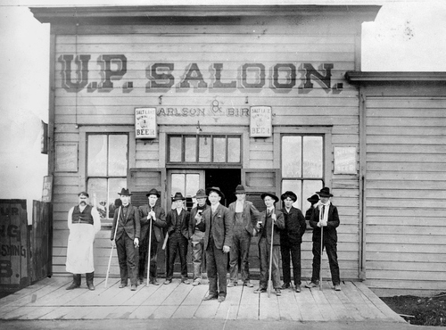

la increible historia de los Bares
Inicio
Bares
Historia
Cocktails
contacto
Somos muchos los que en veranos estamos deseando llegar al chiringuito y pedir cada vez un cóctel diferente. Pues bien, vamos a ver un poco su historia.
La palabra cóctel tiene su origen en la palabra inglesa “cocktail”, que literalmente significa “cola de gallo” aunque nada tenga que ver con la mezcla de bebidas, algunos ven similitudes con la variedad de los colores en una copa.
Según el diccionario, la palabra cóctel es la mezcla de bebidas alcohólicas u otros líquidos y hielo, y según el barman es toda unión armónica de bebidas enfriadas con hielo y agitadas dentro de un recipiente metálico, denominado coctelera o en su defecto mezclado en un vaso mezclador.
El origen del cóctel se remonta al siglo XIX donde en una farmacia de nueva Orleans un farmacéutico, llamado Antonio Peychaud, tenía como costumbre ofrecerles a sus amigos una bebidas preparadas en una huevera (coquetier) siguiendo una receta de sus islas natales a base de amargo, coñac, azúcar y especies. A esta bebida y sus formas de prepararlas se le llamó “coquetier”.
Es bien sabido que el origen de las bebidas alcohólicas también hay que buscarlo en las farmacias, como ocurrió con el antiguo aqua vitae o agua de vida que luego derivo en la palabra “aguardiente” el cual más que un placer para el paladar era un remedio medicinal. Las infusiones estomacales, las bebidas a base de quina, y otros estimulantes, fueron preparados por los farmacéuticos hasta la llegada de los fabricantes de licores y aguardientes, los cuales comenzaron a producir estos inventos químicos gastronómicos a escala industrial.
De aquellos rudimentarios experimentos y combinaciones, hemos pasado a los modernos cócteles y combinados basados en su mayoría en aquellas legendarias y magistrales fórmulas.
La mezcla de bebidas es ,sin lugar a duda, un arte y como todos necesita de una gran sensibilidad, inteligencia, saber y talento. Existente una inmensa variedad de cócteles en el mundo y tantas versiones del original que sería imposible conocer exhaustivamente la historia verdadera de la coctelería.
La coctelería también está muy ligada con el cine. En la mayoría de las películas antiguas y modernas se bebe algún tipo de bebida o cóctel, así como en la literatura donde sólo hay que nombrar al mejor bebedor de la historia, Ernst Hemingway, uno de los mayores genios literarios del siglo XX.
Los Primeros Bares


Para comenzar a escribir sobre el origen del bar debemos remontarnos bastantes años atrás. Este establecimiento aparece en el antiguo pueblo griego (época de Pompeya hasta la edad media) donde se desarrollaron los establecimientos en los cuales se vendían bebidas. Dichos establecimientos se les llamaron “tabernas”, las cuales eran pequeñas tiendas públicas en donde se podían consumir vinos y bebidas espirituosas. Surgiendo de esa manera la actividad o ejercicio de la profesión de vender bebidas alcohólicas. De Grecia pasa a Roma y de ahí a la mayoría de los países europeos en donde esa actividad es mencionada en numerosos códigos y preceptos de la edad media, como lo fue el código de las 7 partidas que aparece en Madrid a finales del siglo XVIII y donde se contempla al tabernero como una profesión. En la Inglaterra industrial aparece un nuevo tipo de lugar, el “pub”, que viene de la abreviación de la palabra public house. La palabra bar procede de la palabra inglesa “barriere” que significa “barra” o “barrera”. Cuando los primeros colonos llegaron a Norteamérica, en las tabernas se separa la zona donde se vendían las bebidas alcohólicas del resto del local mediante una barrera para proteger los productos que se ofrecían de las peleas que se originaban a causa del excesivo consumo de alcohol
La Envolucion de los Bares